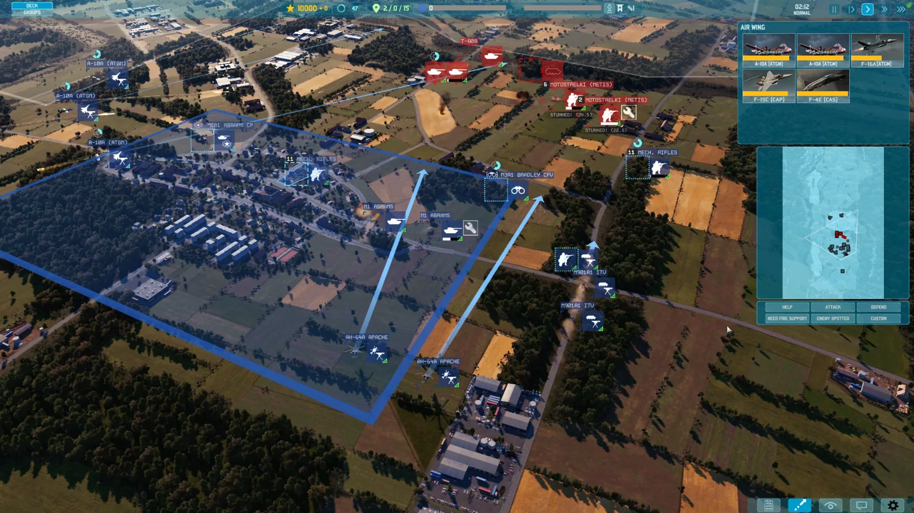
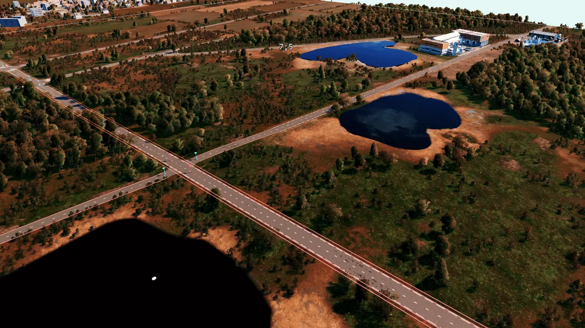
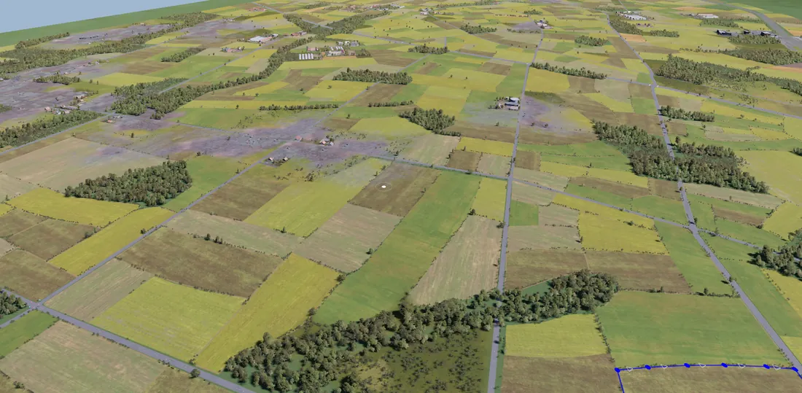
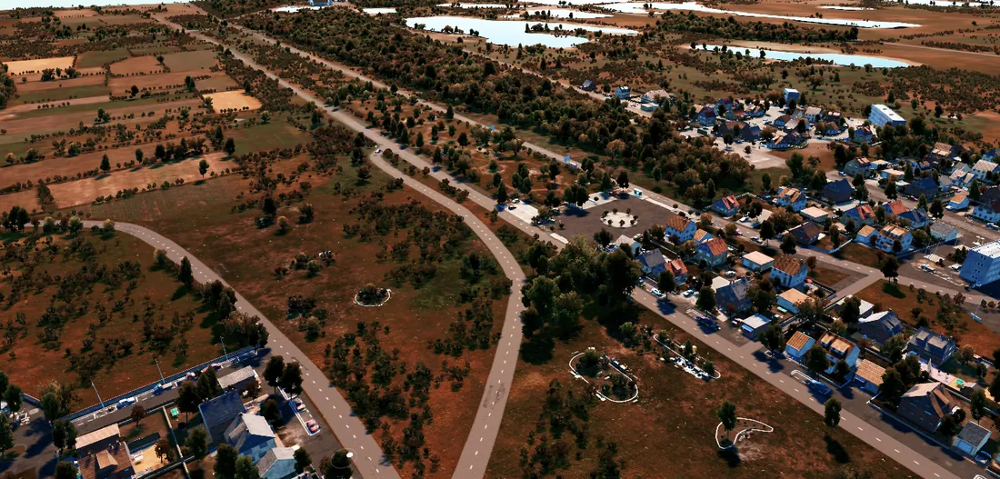
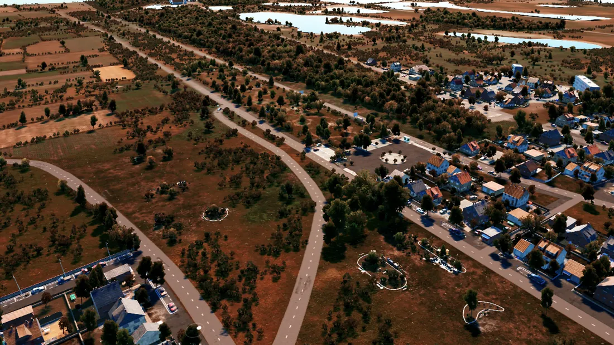
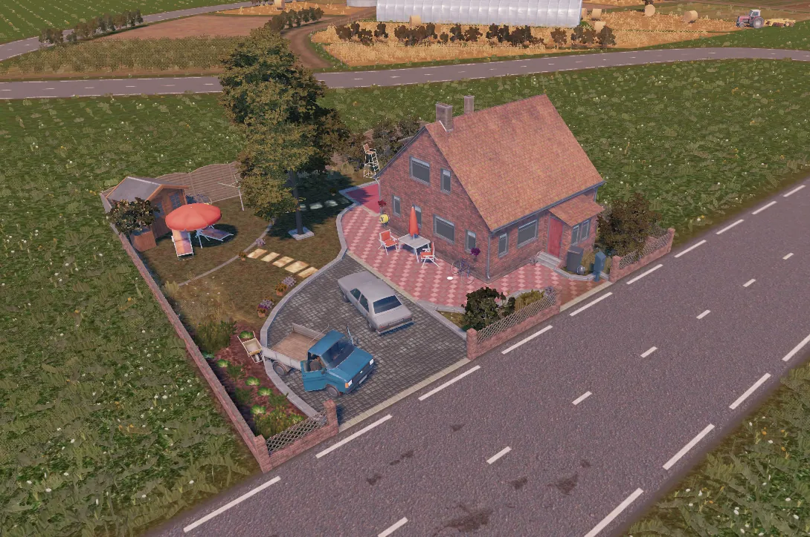
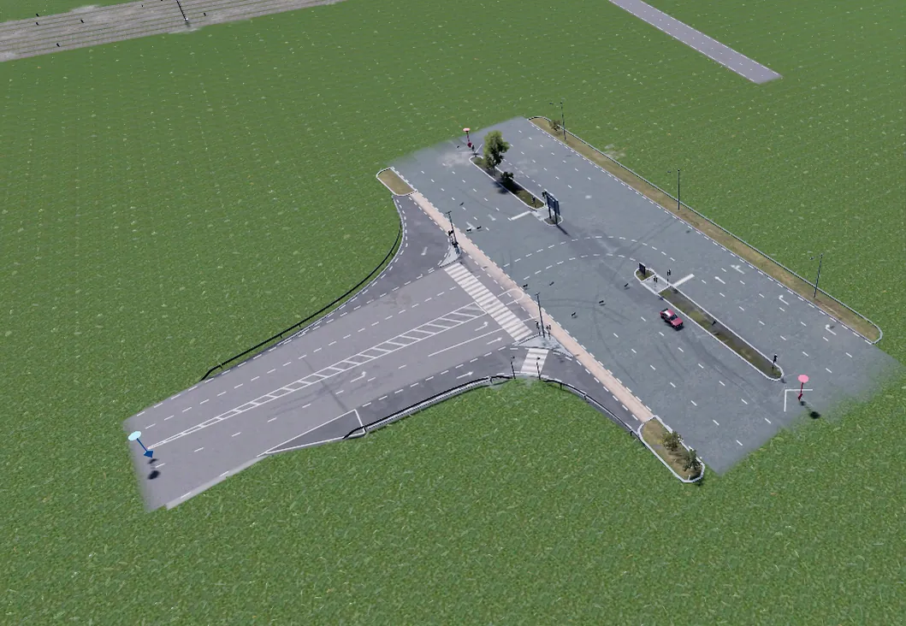
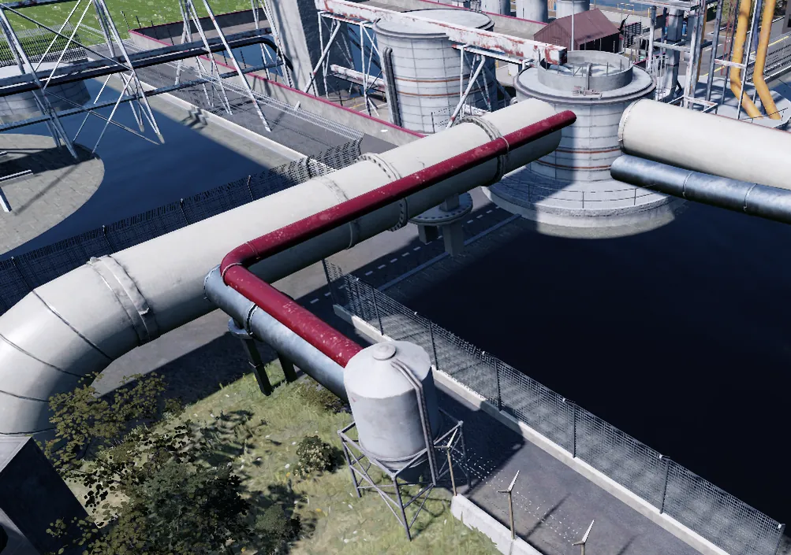

Eugen Systems
WARNO
Large-scale real-time tactics title on a proprietary in-house engine, built to real-world scale with continuous world streaming.
Eugen Systems07/2023 – 01/2024professionalenvironmentoptimisation

Role
World Builder Intern — Large-Scale Environments
Tools
In-house engine · World Machine · modular kits
Period
07/2023 – 01/2024
Context
Large-scale real-time tactics on a proprietary engine
Scope
A complete production map, end to end
Tools
In-house engine · World Machine · modular kits
The problem
WARNO's maps are built to real-world scale and have to read like satellite
imagery while streaming continuously. That means the environment has to hold up
when a player zooms from a whole city block down to a single street, and it has to
keep doing it while the world loads around them.
What I did
Owned a complete production map end to endLayout, terrain, environment data and final optimisation — one person accountable from blockout to ship.
Built large-scale urban and architectural environmentsStreet networks, building blocks and props assembled with the studio's proprietary engine tooling.
Assembled and maintained four modular environment kitsEach kit covers a distinct region, enforcing consistent real-world scale, proportion and spatial accuracy across the whole map.
Designed terrain and layout pipelines using World MachineProcedural generation for terrain, adopted afterwards in my own projects.
Optimised for world streaming and runtime performanceReduced map weight and fixed visual problems found through QA passes at large scale.
Built urban dioramas with as much random variation as possiblePopulating very large maps without letting repetition become readable.
Why it mattered
Learning a proprietary engine inside a shipping production — its environment
tooling and its pipeline — is the part that carried over everywhere since.
Adaptability isn't a soft skill on a map this size; it's the difference between
hitting the scale target and not.
Gallery
Evidence






